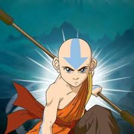
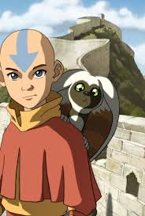

Avatar Wan: Él es el primer avatar que existió, se da a conocer en La leyenda de Korra, Viajó a cuatro ciudades que estaban
sobre cuatro leones-tortuga diferentes y muy lejos entre sí. Cada león-tortuga le otorgó el poder de controlar un elemento.
Logró dominar los cuatro elementos con la ayuda de Raava, el espíritu de la luz y el equilibrio, quien combinaba su energía
con la de Wan. El decidió dominar los cuatro elementos porque era la única forma para poder detener a Vaatu, el espíritu del
caos y la oscuridad, quien él había liberado de Raava que lo contenía para que el mundo estuviera en paz, creyendo que era
un buen espíritu. Cuando llegó el momento de derrotar a Vaatu para hacerse más fuertes Raava se incorporó dentro de Wan,
combinaron sus fuerzas espirituales y así por primera vez Wan entró en Estado Avatar y derrotó a Vaatu aprisionándolo en el
mundo de los espíritus y cerrando los portales. Avatar Roku: Es la reencarnación anterior de Aang, maestro fuego, nacido en
La Nación del Fuego. Construyó el templo del fuego con forma de luna creciente en las aguas orientales de La Nación del
Fuego, siendo el mismo quien después toma forma a través de Aang y destruye el Templo de la Nación del Fuego, su animal
guía era un dragón. A través de los capítulos, el Avatar Roku apareció como un espíritu para guiar a Aang a través de su
largo viaje, para que así Aang pueda cumplir bien su título de Avatar. Su benevolencia daba a entender que no todos los
maestros fuego eran malvados.

Para entrar al estado Avatar y controlarlo, el Avatar debe tener un perfecto equilibrio entre la mente y su espíritu. Al
entrar al estado Avatar, Aang es inconmesurablemente poderoso y posee adicionalmente la sabiduría de sus vidas pasadas para
controlar los elementos. En este estado, sus poderes se incrementan y puede controlar los cuatro elementos al mismo tiempo.
Además, en este estado espiritual, también puede quitar de manera permanente los poderes a sus oponentes, así como puede
devolvérselos si así lo desea. En el caso de que un Avatar sea asesinado en este estado, se cerraría la cadena de
reencarnación del Avatar y daría lugar al fin de su era. En la serie derivada, La leyenda de Korra, se desarrolló el concepto
del origen de este ser; en tiempos remotos, el humano Wan liberó a Vaatu de Raava luego de ser engañado por el primero para
que lo ayudase, y al librarse el mal se manifestó con más fuerza en el mundo y Raava se hacía cada vez más pequeña porque el
humano dejaba de practicar el bien y predominó el mal. Se establece que Raava, el espíritu de la luz y la más poderosa, se
fusionó para siempre con un humano de buen corazón, Wan, para derrotar al espíritu poderoso de la oscuridad, Vaatu, en su
batalla habitual de los diez mil años denominada convergencia armónica, a fin de decidir el destino del mundo: diez mil
años de luz o tinieblas; originándose así el primer Avatar y siendo Raava la fuente de su fuerza.